系列規則是每個語言一套天空（日文版白天天色、韓文版 Halo／Universe），英文版從 ShaderGradient 沒用過的預設挑了四組。每組四張：淺色首頁、淺色字卡、深色首頁、深色字卡。點「開啟可操作版」可以實際滑、點，右上角可以切 A–D 與淺／深。
淺色 Sunset（橘、天藍、金：加州夕陽、66 號公路）／深色 Nighty night（灰紫夜色）
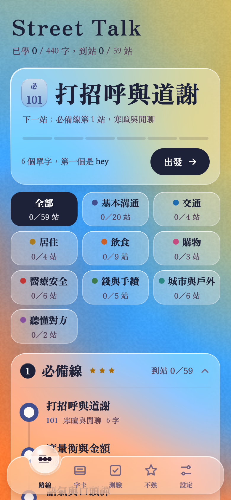
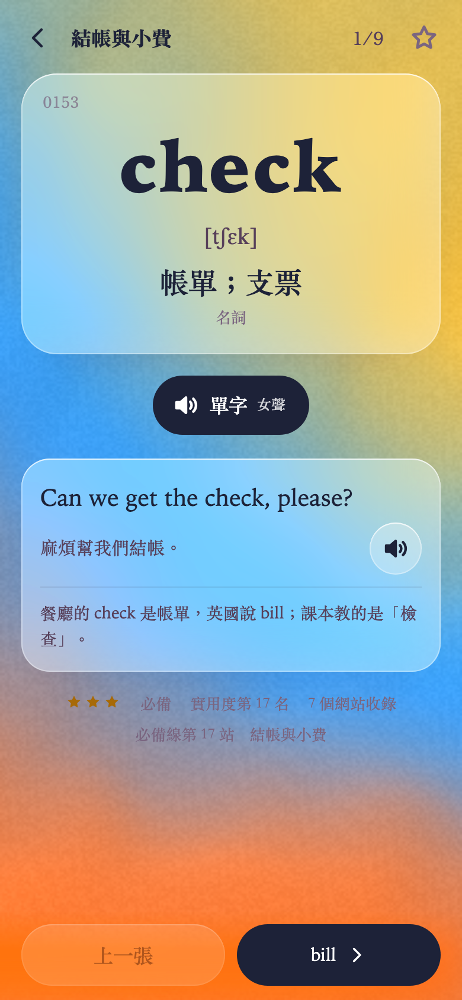
淺色 Mint（薄荷綠、淺青、白）／深色 Pensive（藍、紫）
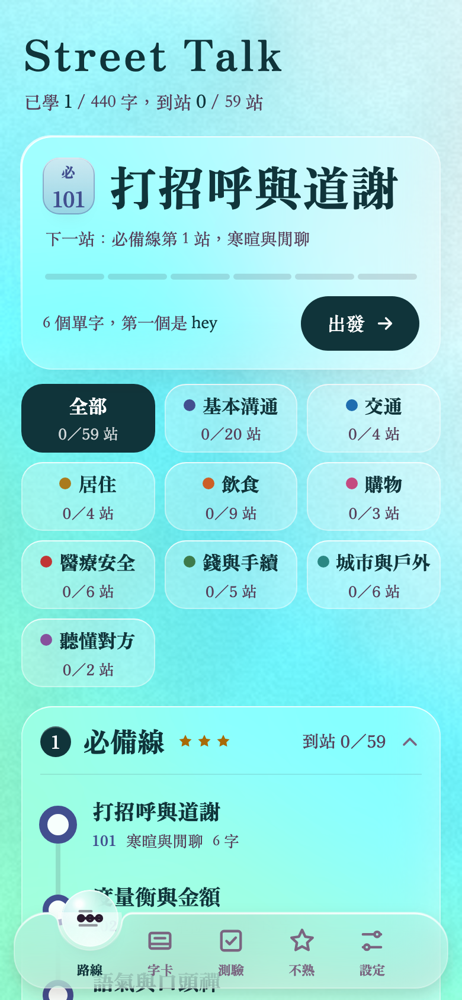
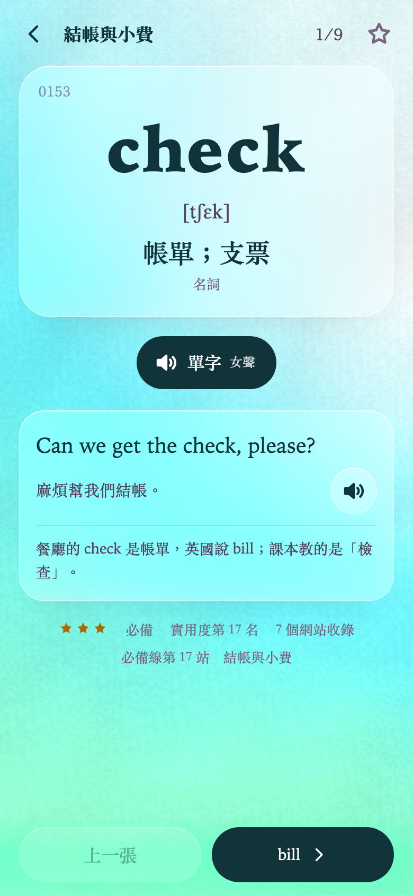
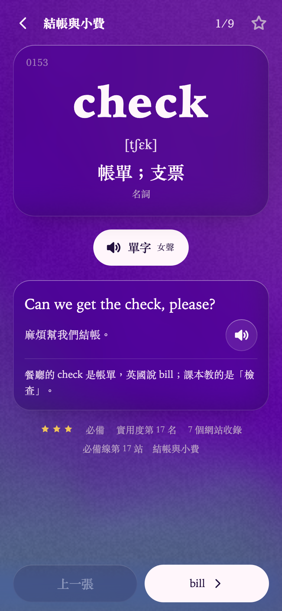
淺色 Interstella（青綠、橘、淡藍）／深色 Nighty night（灰紫夜色）
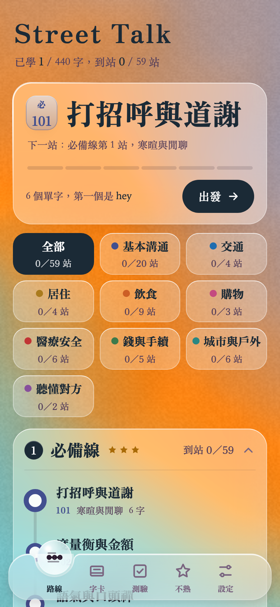
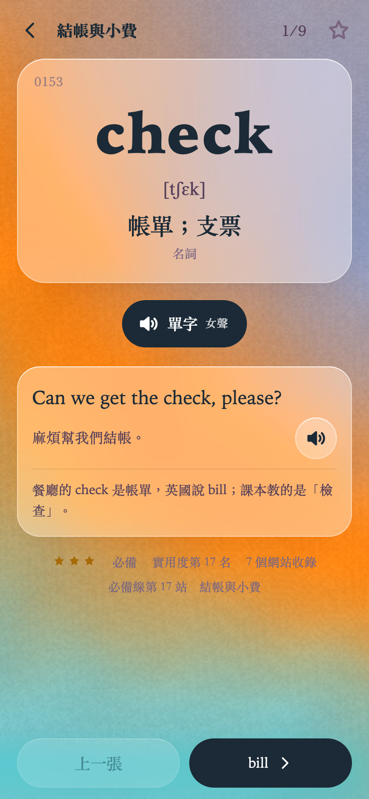
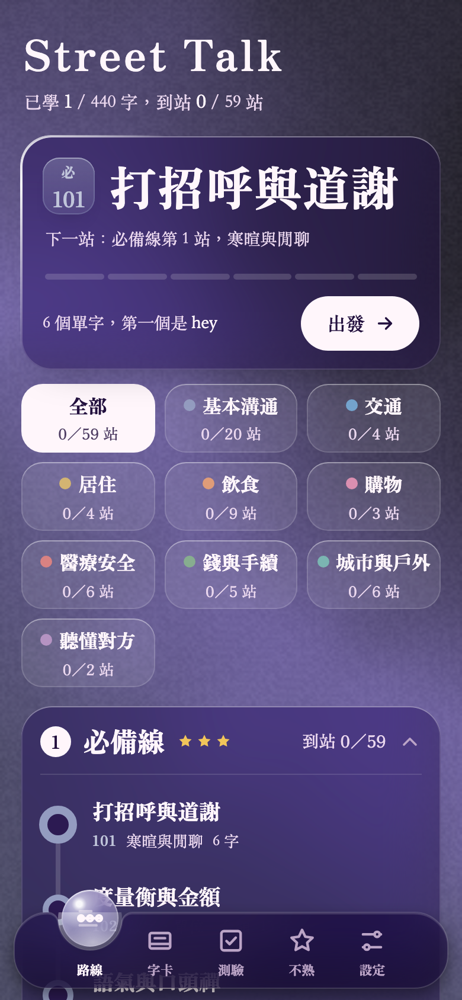
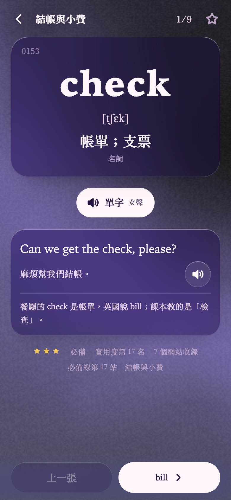
淺色 Cotton Candy（極淡的粉、白、淺藍）／深色 Pensive（藍、紫）
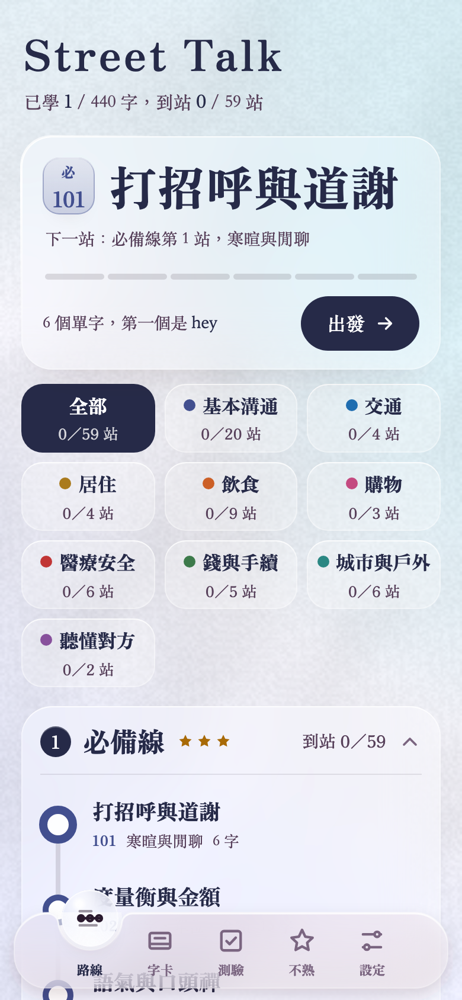
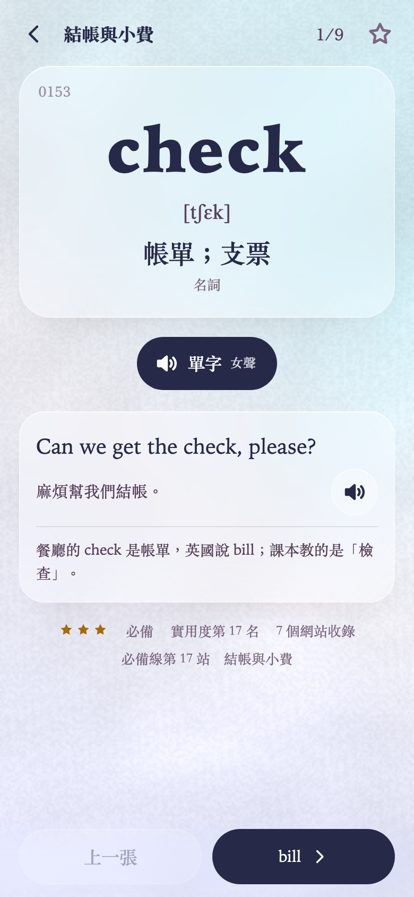
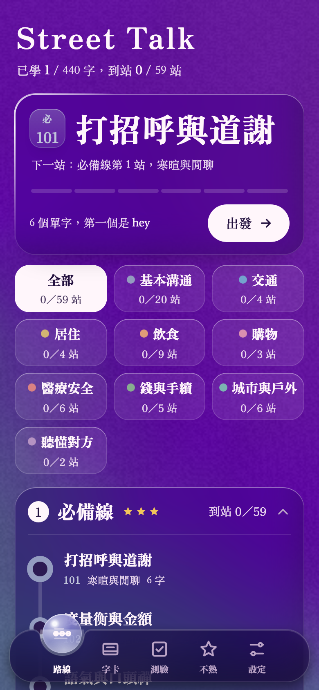
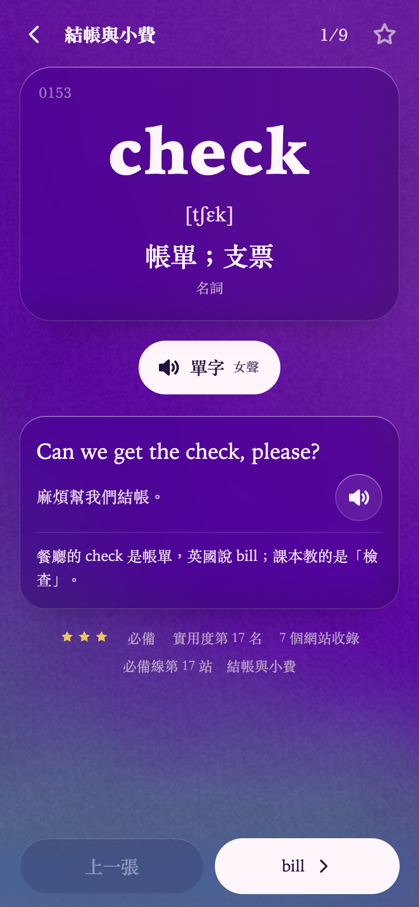
字卡內容是目前已寫好的 440 張（共 3,292 張，還在撰寫），發音還沒做。家族的點綴色是暫定的「美國生活色」，選定天空後會再配。